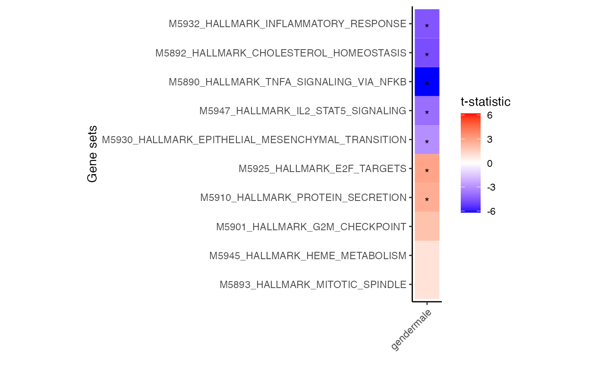

Zenith gene set testing after dream analysis
Gabriel Hoffman
Icahn School of Medicine at Mount Sinai, New York
Source:
vignettes/zenith.Rmd
zenith.Rmdzenith performs gene set analysis on the result of
differential expression using linear (mixed) modeling with dream by
considering the correlation between gene expression traits. This package
implements the camera
method from the limma package
proposed by Wu and Smyth
(2012). zenith() is a simple extension of
camera() to be compatible with linear (mixed) models
implemented in dream().
Standard workflow
# Load packages
library(zenith)
library(edgeR)
library(variancePartition)
library(tweeDEseqCountData)
library(kableExtra)
# Load RNA-seq data from LCL's
data(pickrell)
geneCounts = exprs(pickrell.eset)
df_metadata = pData(pickrell.eset)
# Filter genes
# Note this is low coverage data, so just use as code example
dsgn = model.matrix(~ gender, df_metadata)
keep = filterByExpr(geneCounts, dsgn, min.count=5)
# Compute library size normalization
dge = DGEList(counts = geneCounts[keep,])
dge = calcNormFactors(dge)
# Estimate precision weights using voom
vobj = voomWithDreamWeights(dge, ~ gender, df_metadata)
# Apply dream analysis
fit = dream(vobj, ~ gender, df_metadata)
fit = eBayes(fit)
# Load get_MSigDB database, Hallmark genes
# use gene 'SYMBOL', or 'ENSEMBL' id
# use get_GeneOntology() to load Gene Ontology
msdb.gs = get_MSigDB("H", to="ENSEMBL")
# Run zenith analysis, and specific which coefficient to evaluate
res.gsa = zenith_gsa(fit, msdb.gs, 'gendermale', progressbar=FALSE )
# Show top gene sets: head(res.gsa)
kable_styling(kable(head(res.gsa), row.names=FALSE))| coef | Geneset | NGenes | Correlation | delta | se | p.less | p.greater | PValue | Direction | FDR |
|---|---|---|---|---|---|---|---|---|---|---|
| gendermale | M5890_HALLMARK_TNFA_SIGNALING_VIA_NFKB | 119 | 0.01 | -1.0019645 | 0.1618263 | 0.0000000 | 1.0000000 | 0.0000000 | Down | 0.0000019 |
| gendermale | M5892_HALLMARK_CHOLESTEROL_HOMEOSTASIS | 37 | 0.01 | -1.0915363 | 0.2296170 | 0.0000055 | 0.9999945 | 0.0000110 | Down | 0.0002582 |
| gendermale | M5932_HALLMARK_INFLAMMATORY_RESPONSE | 93 | 0.01 | -0.7819360 | 0.1722474 | 0.0000120 | 0.9999880 | 0.0000241 | Down | 0.0003769 |
| gendermale | M5947_HALLMARK_IL2_STAT5_SIGNALING | 105 | 0.01 | -0.6493291 | 0.1672385 | 0.0001194 | 0.9998806 | 0.0002389 | Down | 0.0028066 |
| gendermale | M5930_HALLMARK_EPITHELIAL_MESENCHYMAL_TRANSITION | 53 | 0.01 | -0.6136470 | 0.2031832 | 0.0017867 | 0.9982133 | 0.0035735 | Down | 0.0335905 |
| gendermale | M5925_HALLMARK_E2F_TARGETS | 109 | 0.01 | 0.4817527 | 0.1659106 | 0.9975051 | 0.0024949 | 0.0049898 | Up | 0.0355160 |
# for each cell type select 3 genesets with largest t-statistic
# and 1 geneset with the lowest
# Grey boxes indicate the gene set could not be evaluted because
# to few genes were represented
plotZenithResults(res.gsa)
Session Info
## R version 4.2.0 (2022-04-22)
## Platform: x86_64-apple-darwin19.6.0 (64-bit)
## Running under: macOS Catalina 10.15.7
##
## Matrix products: default
## BLAS: /System/Library/Frameworks/Accelerate.framework/Versions/A/Frameworks/vecLib.framework/Versions/A/libBLAS.dylib
## LAPACK: /System/Library/Frameworks/Accelerate.framework/Versions/A/Frameworks/vecLib.framework/Versions/A/libLAPACK.dylib
##
## locale:
## [1] en_US.UTF-8/en_US.UTF-8/en_US.UTF-8/C/en_US.UTF-8/en_US.UTF-8
##
## attached base packages:
## [1] stats4 stats graphics grDevices utils datasets methods
## [8] base
##
## other attached packages:
## [1] org.Hs.eg.db_3.15.0 AnnotationDbi_1.58.0
## [3] IRanges_2.30.0 S4Vectors_0.34.0
## [5] msigdbr_7.5.1 kableExtra_1.3.4
## [7] tweeDEseqCountData_1.34.0 Biobase_2.56.0
## [9] BiocGenerics_0.42.0 variancePartition_1.27.2
## [11] BiocParallel_1.30.3 ggplot2_3.3.6
## [13] edgeR_3.38.1 limma_3.52.1
## [15] zenith_0.99.10 knitr_1.39
##
## loaded via a namespace (and not attached):
## [1] backports_1.4.1 BiocFileCache_2.4.0
## [3] systemfonts_1.0.4 plyr_1.8.7
## [5] GSEABase_1.58.0 splines_4.2.0
## [7] GenomeInfoDb_1.32.2 digest_0.6.29
## [9] foreach_1.5.2 htmltools_0.5.2
## [11] fansi_1.0.3 magrittr_2.0.3
## [13] memoise_2.0.1 doParallel_1.0.17
## [15] aod_1.3.2 Biostrings_2.64.0
## [17] annotate_1.74.0 matrixStats_0.62.0
## [19] svglite_2.1.0 pkgdown_2.0.4
## [21] prettyunits_1.1.1 colorspace_2.0-3
## [23] rappdirs_0.3.3 blob_1.2.3
## [25] rvest_1.0.2 textshaping_0.3.6
## [27] rbibutils_2.2.8 xfun_0.31
## [29] dplyr_1.0.9 crayon_1.5.1
## [31] RCurl_1.98-1.7 jsonlite_1.8.0
## [33] graph_1.74.0 lme4_1.1-29
## [35] iterators_1.0.14 glue_1.6.2
## [37] gtable_0.3.0 zlibbioc_1.42.0
## [39] XVector_0.36.0 webshot_0.5.3
## [41] DelayedArray_0.22.0 EnrichmentBrowser_2.26.0
## [43] Rgraphviz_2.40.0 RcppZiggurat_0.1.6
## [45] scales_1.2.0 DBI_1.1.2
## [47] Rcpp_1.0.8.3 viridisLite_0.4.0
## [49] xtable_1.8-4 progress_1.2.2
## [51] bit_4.0.4 httr_1.4.3
## [53] gplots_3.1.3 ellipsis_0.3.2
## [55] farver_2.1.0 pkgconfig_2.0.3
## [57] XML_3.99-0.10 sass_0.4.1
## [59] dbplyr_2.2.0 locfit_1.5-9.5
## [61] utf8_1.2.2 labeling_0.4.2
## [63] tidyselect_1.1.2 rlang_1.0.2
## [65] reshape2_1.4.4 munsell_0.5.0
## [67] tools_4.2.0 cachem_1.0.6
## [69] cli_3.3.0 generics_0.1.2
## [71] RSQLite_2.2.14 broom_0.8.0
## [73] evaluate_0.15 stringr_1.4.0
## [75] fastmap_1.1.0 yaml_2.3.5
## [77] ragg_1.2.2 babelgene_22.3
## [79] RhpcBLASctl_0.21-247.1 bit64_4.0.5
## [81] fs_1.5.2 caTools_1.18.2
## [83] purrr_0.3.4 KEGGREST_1.36.2
## [85] nlme_3.1-157 KEGGgraph_1.56.0
## [87] xml2_1.3.3 compiler_4.2.0
## [89] pbkrtest_0.5.1 rstudioapi_0.13
## [91] filelock_1.0.2 curl_4.3.2
## [93] png_0.1-7 tibble_3.1.7
## [95] bslib_0.3.1 stringi_1.7.6
## [97] highr_0.9 desc_1.4.1
## [99] lattice_0.20-45 Matrix_1.4-1
## [101] nloptr_2.0.3 vctrs_0.4.1
## [103] pillar_1.7.0 lifecycle_1.0.1
## [105] Rdpack_2.3.1 jquerylib_0.1.4
## [107] bitops_1.0-7 GenomicRanges_1.48.0
## [109] R6_2.5.1 KernSmooth_2.23-20
## [111] codetools_0.2-18 boot_1.3-28
## [113] MASS_7.3-57 gtools_3.9.2.1
## [115] assertthat_0.2.1 SummarizedExperiment_1.26.1
## [117] rprojroot_2.0.3 withr_2.5.0
## [119] GenomeInfoDbData_1.2.8 parallel_4.2.0
## [121] hms_1.1.1 grid_4.2.0
## [123] tidyr_1.2.0 minqa_1.2.4
## [125] rmarkdown_2.14 Rfast_2.0.6
## [127] MatrixGenerics_1.8.0